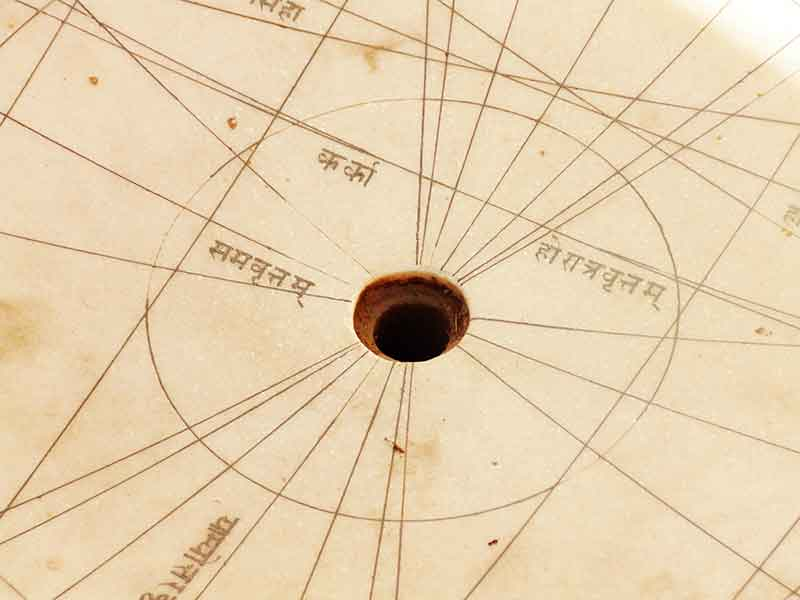

<html></html>
<head>
  <link rel="stylesheet" href="dist/assets/styles/jaipur.css"/>
  <link rel="stylesheet" href="dist/assets/styles/main.css"/>
  <link href="https://fonts.googleapis.com/css?family=Roboto+Slab|Josefin+Sans" rel="stylesheet" type="text/css"/>
  <title>Pink City</title>
</head>
<body>
  <section class="j_cover clear">
    <div class="content">
      <h2>Through the Pink City
        <p><a href="souvenirs.html">Back</a></p>
      </h2>
    </div>
    <h3>Jaipur, Rajasthan, India</h3>
    <p>
      As our bus dropped us in the much known city center of Jaipur, rifling through the lanes and by-lanes of the famous Jalebi Chowk, we got ready to witness Jaipur’s most famous Hawa Mahal and Jantar Mantar.<br>
However, when we got down from the bus we found ourselves in a big shop that sold all kinds of Rajasthani clothes, jewellery, show-pieces and an endless array of different traditional items. It was clear that this was part of the guide’s duty to push us into shopping but nobody was complaining! Complaining would come later when we would find out that the same things were being sold outside Hawa Mahal at half the price!<br>
After shopping to our heart’s content we started towards Hawa Mahal. After quite a long walk past tempting shops and endless pink buildings we found ourselves standing before a large door. We entered through the door and voila! We found ourselves standing in the middle of a large courtyard with a water fountain at the centre.
      <br>
      </p>
    <p>
      We learnt soon thereafter that this palace was built by Maharaja Sawai Pratap Singh in the 1700s keeping in mind the purdah system that the Rajputs used to follow. The palace is believed to have been constructed keeping in mind the crown of Lord Krishna. The intricately designed 953 ‘Jharokas’ or windows  allowed the women of the royal family to witness day to day events and public processions on the roads without being seen as was the rule many years ago. These windows also allowed free circulation of air in the building thus allowing the interiors to stay cool even in the scorching summers that Rajasthan is famous for.<br></p>
    </p>
    <p>
      The five-storied building did not have any staircase but instead was connected with slopes. We also learnt that the big water fountain at the centre was used during the festival of Holi. It is said that the Maharaja himself used to be present during such festivals. One of the fascinating things about the Hawa Mahal was the use of coloured class in the windows. When the sunlight came pouring through these glass windows it transformed the interiors into a myriad of colours, it is indeed a sight to see! Another interesting thing we noticed was that separate windows were allotted for the servants or companions of the Maharani as they were smaller in size and were of less impressive finish.
      <br>
      
      
    </p>
    <p>
     After being mesmerized by the beauty of the Hawa Mahal, it was time to visit Jantar Mantar. Built by Maharaja Jai Singh II, it is the largest of the five observatories built in Delhi, Jaipur, Ujjain, Mathura and Varanasi.  When asked, the guide informed us that since there was no concrete proof behind astrological predictions, it was decided to build these instruments, fourteen precisely, to mathematically prove the legitimacy of the mysteries of Time and Space. 
      <br>
      
    </p>
    <p>
      Among all the fourteen major geometrical devices, the large Samrat Jantar is the largest. Its shadow is carefully plotted to tell the time of the day and it is accurate down to two seconds. The fourteen major structures are: The Samrat Yantra, Ram yantra, Jai Prakash Yantra, Dhruva Yantra, Narivalya Yantra, Kranti Yantra, Raj Yantra, Unnsyhsmsa Yantra, Chakra Yantra, Disha Yantra, Dakshina Yantra, large Samrat Yantra and Rashivalayas Yantra.<br>




    </p>
      <p>
       The beautiful landscaped premises and the monumental structures left us in awe and in no time at all, it was time to bid adieu to Jaipur. As we watched the pink buildings receding in the distance we could not but help wish we could stay a little longer. As we settled down in our cosy seats, we dreamed of the Pink City while in our minds, the Blue City beckoned.<br>

    </p>
    
<p style="text-align:right"><a href="https://www.facebook.com/arjama.mukherjee">-Arjama Mukherjee</a></p>
<a href="index.html">
      <button>back to home</button></a>
  </section>
  <section id="footer" class="footer clear">
    <center>
      <div class="content clear">
        <div class="content-1">
          <p><span>WALK</span> <br> 4B/28, 2nd Floor, Tilak Nagar, New Delhi, Delhi 110018.
            <!--a(href='support.html') read more &#10140;-->
          </p>
        </div>
        <div class="content-2">
          <div class="content-2-1">
            <p><span>TALK</span><br> the.rovers@outlook.com</p>
          </div>
          <div class="content-2-2">
            <p><span>STALK</span>
              <ul id="social_icons">
                <li><a href="https://facebook.com/rover.org"></a></li>
                <li><a href="https://www.youtube.com/channel/UCAH9TX_LhImPk9YEKKjf26A"></a></li>
                <li><a href="https://instagram.com/the.rovers"></a></li>
                <li><a href="https://twitter.com/rovers_org"></a></li>
                <li><a href="https://plus.google.com/u/0/b/100252120756478981295/100252120756478981295/about"></a></li>
                <li><a href="http://issuu.com/therovers"></a></li>
              </ul>
            </p>
          </div>
        </div>
      </div>
      <p class="rightpara">copyrights@2015 rovers.org.in</p>
    </center>
  </section>
</body>